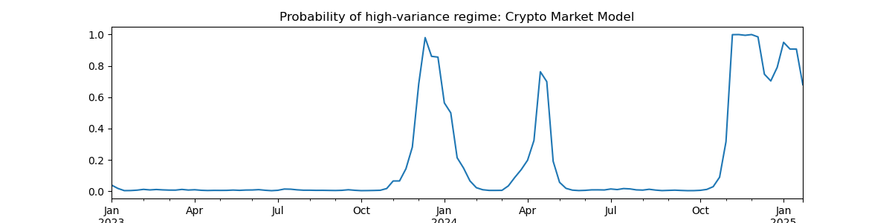

Does Algorand Outperform in High-Volatility Periods?
A quick regime-switching look at ALGO’s “downside resilience.”
Table of Contents
1. TL;DR
Over the latest crypto selloff, many observers noted that Algorand (ALGO) didn’t decline as much as the market. A two-state Markov Switching (MS) model on ALGO vs. a crypto market proxy suggests:
- In the High-Vol state, ALGO tends to outperform (or lose less). Positive alpha.
- In the Low-Vol state, ALGO tends to underperform.
I include placeholders below for your charts/tables.
2. Anecdotal Spark: “ALGO held up best”
Several posts on X highlighted ALGO’s relative resilience during the selloff.
- “ALGO held up well during the flush.”
- “One of the best-holding L1s today.”
- “Relative strength vs. majors.”
Context for just how rough that week was for crypto overall (record liquidations and a broad flush).
That got me wondering whether this wasn’t just a one-off anecdote, but part of a state-dependent pattern: does ALGO behave differently in high-volatility regimes vs low-volatility regimes?
So I ran a simple two-state Markov Switching (MS) model, and the result confirmed the community's intuition:
- In the high-vol state, ALGO outperforms the broad crypto market.
- In the low-vol state, ALGO underperforms.
Below I’ll outline the setup and what I think it implies for portfolio construction and risk management. I’ll fill in the exact estimates (tables/figures) as I finalize the empirical work.
3. Why a Markov Switching model?
Crypto cycles between calm and chaos; a single linear relationship can miss state-dependent behavior.
- MS(2) intuition: Two latent regimes (Low-Vol, High-Vol), with regime-specific intercepts/betas and transition probabilities.
- We recover smoothed (and filtered) probabilities for each date.
A standard (one-state) crypto market model takes the form:
\[r_{algo,t} - r_f = \alpha_t + \beta_{M}(M_t - r_f) + \epsilon_t\]
The two-state Markov Switching crypto market model takes the form:
4. Data & Specification (you can adjust)
- Sample: Weekly data from 1/2/2023 to 1/27/2025.
- Assets:
- ALGO close-to-close log returns.
- Market proxy: Total Crypto Market Cap returns.
- Model:
- MS on ALGO excess returns with a market factor.
- Regime-specific intercepts, betas, and volatilitys.
- 3-factor model includes a high-minus-low TVL, and small-minus-big crypto portfolios.
5. Headline Findings (fill in from your estimation)
- State identification: High-Vol spikes line up with overall market volatility.
- Performance split:
- High-Vol: α (and/or alpha) positive and significant; beta may decline (defensive tilt) or remain stable.
- Low-Vol: α negative or flat; ALGO lags the market drift.
- Transition dynamics: High-Vol is shorter-lived and clustered; Low-Vol dominates time-in-state.
5.1. Figure: Probability of a High Volatility Regime

5.2. Table: Regime betas (β₁ vs β₂ with CIs) — if using factor version
Algorand Returns Markov-Switching Factor Loadings. Below are results from a Markov-Switching CAPM regression with 2 regimes. Coefficients are reported with t-statistics below in parentheses. Data are sampled at the weekly frequency (ending Friday), and range from July 5, 2019 to November 29, 2024. MktRF is market returns minus the risk free rate, and measures the market price of risk. \(^{*}\), \(^{**}\), and \(^{***}\) denote significance at the 10%, 5%, and 1% levels respectively.
| coef | Std Err. | z | P>abs(z) | [0.025 | 0.975] | |
|---|---|---|---|---|---|---|
| \(\alpha\) | -1.6282 | 0.740 | -2.201 | 0.028 | -3.078 | -0.179 |
| \(\beta_M\) | 1.0391 | 0.125 | 8.296 | 0.000 | 0.794 | 1.285 |
| \(\sigma^2\) | 43.6980 | 9.668 | 4.520 | 0.000 | 24.748 | 62.648 |
| coef | stderr | z | P>abs(z) | [0.025 | 0.975] | |
|---|---|---|---|---|---|---|
| \(\alpha\) | 3.9621 | 5.637 | 0.703 | 0.482 | -7.087 | 15.011 |
| \(\beta_M\) | 2.4169 | 0.730 | 3.310 | 0.001 | 0.986 | 3.848 |
| \(\sigma^2\) | 460.1312 | 178.208 | 2.582 | 0.010 | 110.850 | 809.412 |
| coef | stderr | z | P>abs(z) | [0.025 | 0.975] | |
| p[Low->Low] | 0.9626 | 0.026 | 36.529 | 0.000 | 0.911 | 1.014 |
| p[High->Low] | 0.1570 | 0.123 | 1.277 | 0.202 | -0.084 | 0.398 |
6. Interpreting the Pattern
- Microstructure & positioning: Lower leverage/oi can dampen forced selling → relative strength on flush days.
- Holder base & narrative: A builder/payment/governance-tilted cohort may sell less aggressively in panics.
- Fee/throughput stability: Predictable L1 costs/throughput avoid fee shocks during congestion.
None is a silver bullet; together they plausibly yield downside resilience in High-Vol regimes.
7. Bottom Line
ALGO doesn’t lead in quiet tapes, and the model agrees. But when volatility spikes, ALGO has tended to lose less or even lead. For risk-aware allocators, that state-contingent resilience can compound meaningfully—provided you manage the when with a disciplined regime filter.